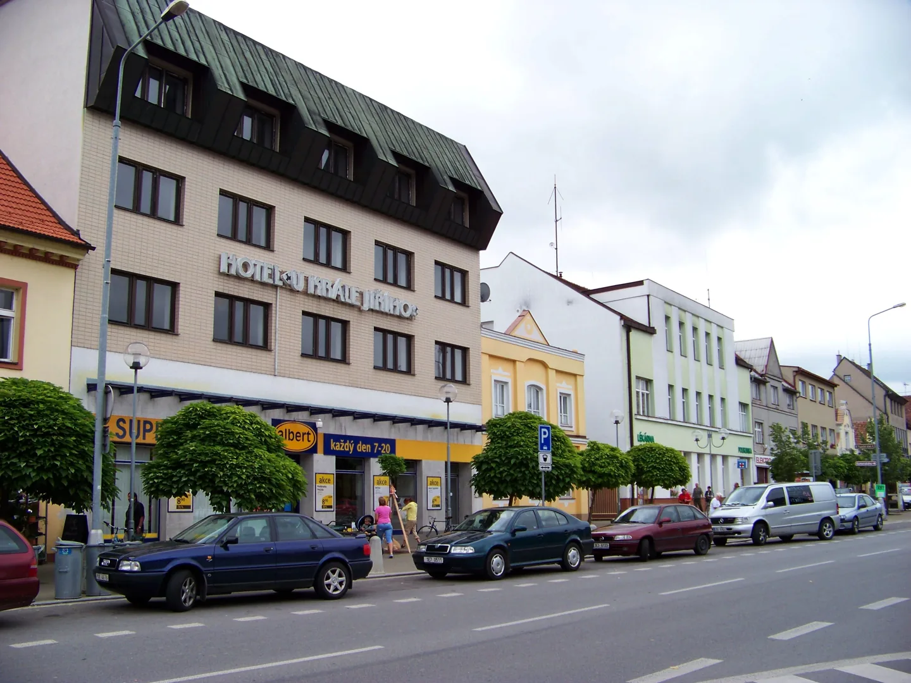

Co vidět v Holicích
Muzeum Emila Holuba, kostel sv. Martina a náměstí. Těmito třemi místy můžete začít prohlídku Holic.
Africké muzeum Dr. Emila Holuba
Muzeum je věnované Emilu Holubovi a jeho cestám po Africe. Prohlédnete si tu africké sbírky a dozvíte se víc o životě cestovatele, který se v Holicích narodil.
Kde: Holubova 768, 534 01 Holice.
Otevírací dobu a vstupné najdete na webu muzea.
Přímo u muzea začíná stezka Od Holuba k Malichovi.
Zdroj: Africké muzeum Dr. Emila Holuba.

Kostel sv. Martina
Kostel sv. Martina poznáte podle žlutobílého průčelí a věže s cibulovitou bání. Dnešní barokní budova vznikla v letech 1736 - 1739 na místě staršího kostela.
Ve věži visí zvon Martin z roku 1499, který je starší než samotná stavba. Kostel je také třetí zastávkou městské naučné stezky.
Kostel si můžete prohlédnout zvenku při procházce centrem. Na prohlídku interiéru se zeptejte ve farnosti.

Náměstí T. G. Masaryka
Náměstí T. G. Masaryka tvoří centrum Holic. Navazují na něj ulice s obchody a sídlí tu městský úřad. Při první návštěvě poslouží jako dobrý orientační bod.
Z náměstí pokračuje městská naučná stezka k Městskému parku. Náměstí samotné je jejím čtvrtým zastavením.
Pokud přijedete autem, podívejte se na informace o parkování.
